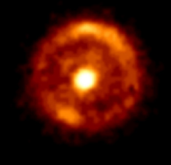
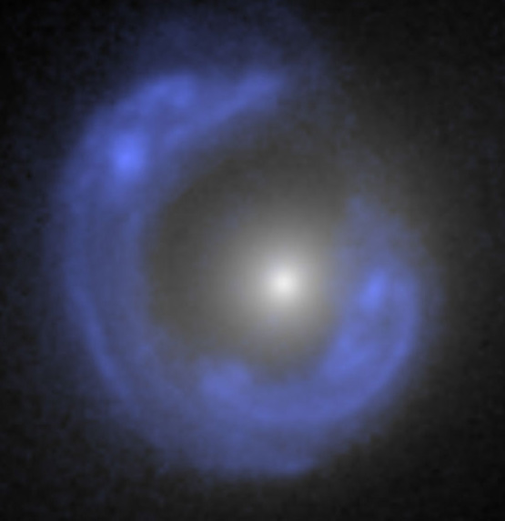

Einstein Ring
An important example of the gravitational lens effect is the Einstein ring phenomenon illustrated at right. According to general relativity, gravity causes a deflection of light by the gravitational field of a massive body. In this case a galaxy bends the light emanating from a galaxy that is directly behind it, focusing the otherwise divergent light into a visible ring.
|  |
This image was made by the Hubble Space Telescope and is credited to L. J. King
(U. Manchester, NICMOS, HST, NASA). The formal designation of the more distant galaxy is B1938+666. The ring is described as being 1 arcsecond across as observed from Earth's vicinity, but tens of thousands of light years across in size. The foreground galaxy must be almost perfectly aligned to provide a circular ring of light like this example.

The background galaxy identified as SDSSJ1430 forms an Einstein ring "mirage" around the foreground normal white galaxy. This image is credited to A.Bolton (UH/IfA) for SLACS and NASA/ESA.
Online references:
Einstein ring on Astronomy Picture of the Day.
Einstein ring of a galaxy.
|
Index
References
|